Said Fawzy's Curated Library
Microsoft Power BI Books
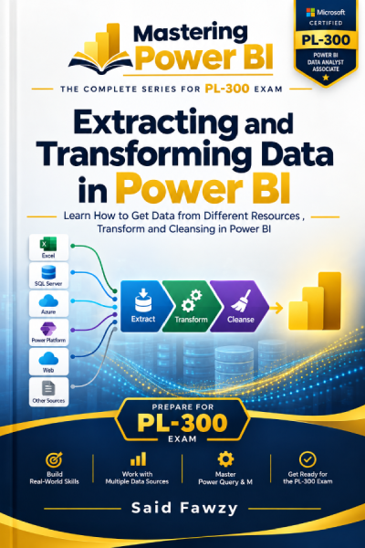
Extracting and Transforming Data in Power BI
A comprehensive hands-on guide covering the ETL lifecycle in Power Query. Master data connection, column transformations, joins, and end-to-end data preparation.
دليل تطبيقي شامل يغطي دورة معالجة البيانات (ETL) بالكامل عبر محرك Power Query؛ يشمل تنظيف ودمج البيانات وفحص جودتها مع 18 تدريباً عملياً ومشروع تخرج واقعي.
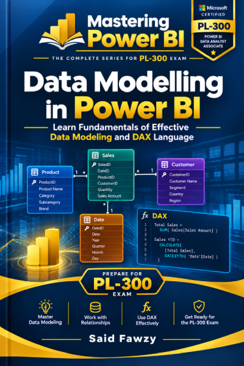
Data Modelling in Power BI
Master enterprise data modeling architectures and DAX calculations. Covers Fact vs. Dimension tables, Star & Snowflake schemas, relationship cardinality, and DAX measures.
المرجع الشامل في نمذجة وهندسة البيانات؛ يغطي جداول الحقائق والأبعاد (Fact & Dimension)، ومخططات النجمة ورقاقة الثلج، وإدارة سياق التصفية والمقاييس المحسوبة.
Data Visualization in Power BI
Master advanced Power BI visuals, interactive reports, bookmarks, drill-through, and Power BI Service publishing with 33+ practical exercises and a comprehensive final project.
مرجع عملي شامل لبناء التقارير واللوحات التفاعلية (Dashboards)؛ يغطي الرسوم المتقدمة، الإشارات المرجعية (Bookmarks)، ونشر ومشاركة النماذج عبر Power BI Service مع مشروع تخرج متكامل.
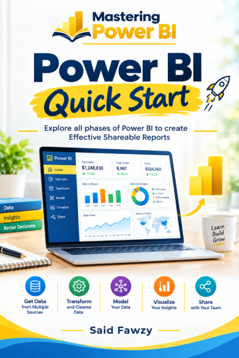
Power BI Quick Start
A practical fast-track guide designed to get you analyzing data and building reports within hours. Covers the entire pipeline: Power Query ETL, Data Modeling, DAX fundamentals, report design, Power BI Service publishing, and concludes with 2 comprehensive capstone projects.
دليل الانطلاق السريع والمكثف لتعلم Power BI في ساعات معدودة؛ يغطي دورة العمل الكاملة بدءاً من معالجة البيانات، والنمذجة، ودوال DAX، وبناء التقارير ومشاركتها عبر Power BI Service، مع مشروعين عمليين متكاملين.
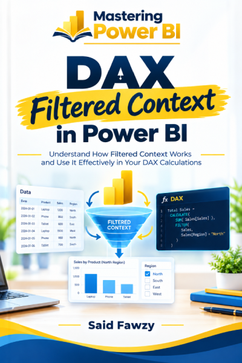
DAX Filtered Context in Power BI
A focused masterclass on the analytical core of Power BI: Filter Context and evaluation engines. Learn how to manage active/inactive relationships, master the CALCULATE function and filter modifiers, and understand the mechanics of Context Transition for accurate DAX calculations.
كتيب تخصصي متقدم يركز على المحرك التحليلي للغة DAX؛ يشرح بعمق سياق التصفية (Filter Context)، العلاقات النشطة وغير النشطة، تسخير دالة CALCULATE وتمرير معدلات التصفية، بالإضافة إلى آلية انتقال السياق (Context Transition).
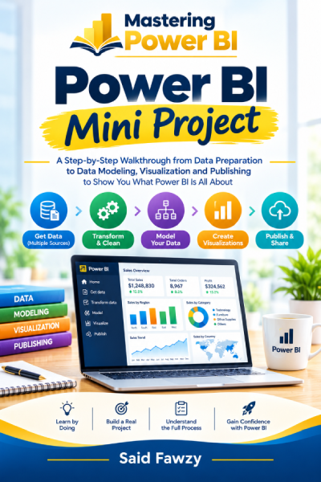
Power BI Mini Project
A practical, step-by-step walkthrough project based on an HR dataset. Covers loading and cleaning missing data in Power Query (M Language inspection), modern On-Object visual configuration, conditional formatting (Data Bars & Colors), visual interaction control, and final publishing to Power BI Service.
مشروع تدريبي عملي خطوة بخطوة على بيانات موارد بشرية واقعية (HR)؛ يشمل جلب ومعالجة القيم المفقودة في Power Query، التعامل مع واجهة On-Object الحديثة، تطبيق التنسيق الشرطي وتعديل تفاعل الرسوم، وحتى نشر التقرير النهائي على مساحة عمل السحابة.
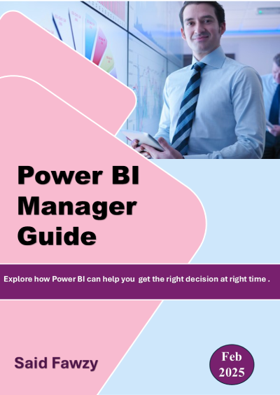
Power BI Manager's Guide
A strategic guide crafted for project managers and decision-makers to understand the analytics lifecycle, lead BI teams effectively, and leverage Power BI across construction, manufacturing, and business operations. Accompanied by a dedicated Activity Book for executive hands-on practice.
دليل إداري واستراتيجي موجه لمديري المشاريع والقيادات التنفيذية؛ يشرح دورة حياة تحليل البيانات وكيفية توظيف Power BI في قطاعات التشييد والصناعة والأعمال، ومتابعة فرق العمل لإنتاج تقارير دعم اتخاذ القرار، مع كتاب تمارين وأنشطة تكميلي.
Microsoft Excel Books
ميكروسوفت إكسيل للمبتدئين
دليل تدريبي تطبيقي شامل من 10 فصول يبدأ معك من الصفر لاحتراف واجهة إكسيل، إدارة المصنفات، الصيغ والدوال الأساسية، تنسيق البيانات، تخطيط الجداول، وحتى طباعة وحماية المصنفات مع اختبارات وتمارين عملية بعد كل فصل.
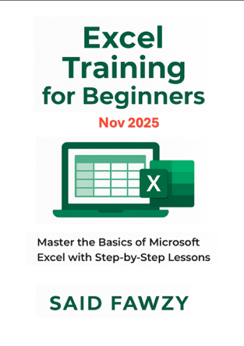
Excel Training for Beginners
A hands-on foundation guide covering Excel interface navigation, workbook structure, essential formulas (SUM, AVERAGE, COUNT), data formatting, worksheet layout, object insertions, and safe workbook sharing across 10 structured chapters.
النسخة الإنجليزية المعتمدة للتأسيس الاحترافي في إكسيل خطوة بخطوة عبر 10 فصول تطبيقية مدعومة بتمارين ذاتية واختبارات لتقييم المهارات.
Excel Intermediate Training (2nd Edition)
Take your spreadsheet skills further with Named Ranges, structured Lists & Tables, lookup mastery (VLOOKUP, XLOOKUP, INDEX/MATCH), nested logical tests, 3D references, advanced chart customization, and conditional formatting rules.
الطبعة الثانية المحدثة للمستوى المتوسط؛ تغطي النطاقات المسماة، الجداول، دوال البحث المتقدمة، الشروط المتداخلة، المراجع ثلاثية الأبعاد، وتصميم الرسوم البيانية وقواعد التنسيق الشرطي.

Mastering Data Analysis with Excel
Bridging classic Excel and Modern Analytics: master Pivot Tables, Pivot Charts, Slicers, automated ETL with Power Query, building relational Data Models in Excel, and authoring analytical DAX measures with Time Intelligence.
دليل احتراف تحليل البيانات بالإكسيل الحديث؛ يجمع بين أدوات التحليل الكلاسيكية وجداول الـ Pivot، ومعالجة البيانات المتقدمة عبر Power Query، وبناء نماذج البيانات وصياغة دوال DAX ودوال الوقت الذكية.
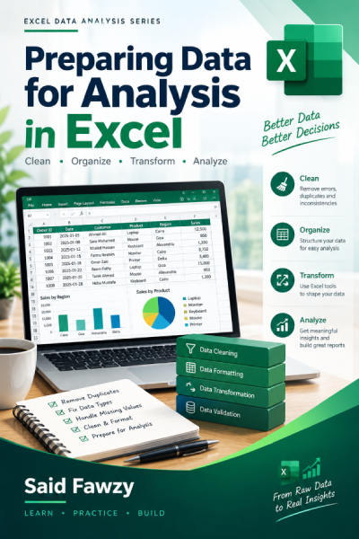
Preparing Data for Analysis in Excel
The foundational handbook for aspiring data analysts: mastering data cleansing, formula refreshers, knowledge check assessments, and a 6-year business lab dataset designed to build solid intuition before advanced modeling.
الدليل التأسيسي الشامل في فلسفة إعداد وتحليل البيانات عبر Excel؛ يركز على مراجعة المفاهيم والدوال الأساسية قبل كل فصل، واختبارات الفهم، مع تدريب عملي تطبيقي على بيانات شركة مجمعة على مدار 6 سنوات لإدراك قيمة الأرقام وسرد القصص بالبيانات.

Introduction to Data Analysis using Excel
The classic scenario-based foundation for Excel analytics: master reporting charts, structured Excel tables, fundamental PivotTables, and assembling interactive executive dashboards with hands-on multi-year company lab models.
الدليل التأسيسي الكلاسيكي لتحليل البيانات وإعداد التقارير في إكسيل: مهارات بناء الرسوم البيانية التوضيحية، الجداول الذكية، الجداول المحورية (Pivot Tables)، وتجميع لوحات القيادة التفاعلية مع تدريبات عملية وتطبيقات Labs خطوة بخطوة.
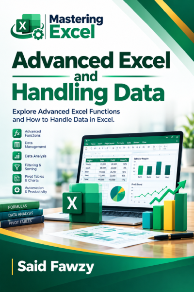
Advanced Excel and Handling Data
A practical deep dive into advanced spreadsheet functions and data handling techniques: mastering complex nested logic, dynamic two-way lookups, data validation constraints, and multi-period business scenarios.
دليل تطبيقي متقدم في استغلال أدوات إكسيل الاحترافية ومعالجة البيانات المعقدة: التمكن من الشروط المتداخلة، محركات البحث المتقدمة، قواعد التحقق من صحة المدخلات، وتطبيقات عملية على سجلات أعمال ممتدة لعدة سنوات.
Mastering Database Books
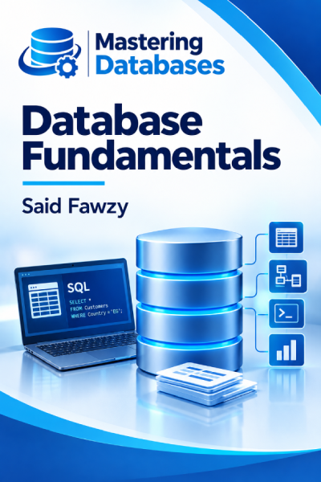
Database Fundamentals
A foundational guide bridging relational database theory with practical design. Learn DBMS architectures (Three-Schema), conceptual design with Entity-Relationship Diagrams (ERD), mapping to logical tables, database integrity constraints, and essential Access objects with SQL DDL.
المرجع التأسيسي في علوم ونظم إدارة قواعد البيانات العلائقية؛ يشرح معمارية النظم (Three-Schema)، وتصميم مخططات الكيانات والعلاقات (ERD)، والتحويل للنموذج المنطقي، مع مقدمة تطبيقية على Microsoft Access وأوامر لغة تعريف البيانات SQL DDL.
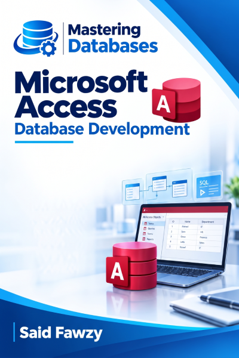
Microsoft Access Database Development
An intensive hands-on lab manual covering table structures, primary keys, referential integrity and cascade rules, multi-table joins, calculated fields via Expression Builder, automated Parameter Queries, Action Queries, and core SQL (DDL & DML).
دليل المختبرات والتطوير العملي في Microsoft Access؛ يركز على بناء وتصميم الجداول المتقدمة، وضبط العلاقات وفرض التكامل المرجعي، والاستعلامات المعقدة والروابط المتعددة (Joins)، والاستعلامات الإجرائية ومحددات المعاملات وأوامر SQL.
Microsoft Access Application Development
Transform raw databases into fully functional desktop applications. Master custom Form design, property sheets, SubForms, Tabbed layouts, Split Forms, tab orders, button controls, and build intuitive user interfaces using Navigation Forms and Switchboards.
دليل تحويل قواعد البيانات إلى تطبيقات أعمال مكتبية متكاملة وسهلة الاستخدام؛ يغطي تصميم واجهات ونماذج المستخدم المتقدمة، والنماذج الفرعية (SubForms)، والتخطيطات المبوبة، ونماذج التنقل ولوحات التحكم الرئيسية (Switchboards).
Business Excellence & Management
The Art of Writing Professional Emails
A comprehensive interactive learning experience covering professional email structure, business etiquette rules, common writing pitfalls, and hands-on rewrite workshops. Includes a self-scoring interactive HTML training course and a dedicated student activity book.
حقيبة تدريبية تفاعلية ثنائية اللغة تجمع بين هيكلة المراسلات الرسمية وقواعد الإتيكيت المهني وتفادي الأخطاء الشائعة، مصحوبة بكراس أنشطة تطبيقي وحزمة كورس HTML تفاعلي متكامل للتقييم الذاتي.
Power Automate - Manage Client Emails Workflow
A practical enterprise automation project manual. Build an end-to-end client email workflow connecting Outlook triggers to SharePoint Lists, handling file attachments, sending team alerts, and scheduling automated 3-hour pending request escalation reminders.
مشروع تطبيقي لبناء منظومة أتمتة مؤسسية لمراسلات العملاء؛ يوضح خطوة بخطوة ربط تدفقات Power Automate بقوائم SharePoint List، واستخراج المرفقات، وإرسال تنبيهات المتابعة والتذكير التلقائي كل 3 ساعات للمهام المعلقة.
Risk Management for Projects
A structured project management manual for identifying, categorizing, and assessing engineering and business risks. Features Monte Carlo simulation models, risk registers, response planning (treatment & transfer), communication canvases, and a companion activity book.
دليل منهجي متقدم لإدارة مخاطر المشروعات الهندسية والتنفيذية؛ يغطي دورة معالجة وتصنيف المخاطر، ونمذجة المحاكاة عبر Monte Carlo، وبناء سجلات المخاطر ومصفوفات الاستجابة والمتابعة المستمرة، مدعوماً بكراس أنشطة تطبيقي.
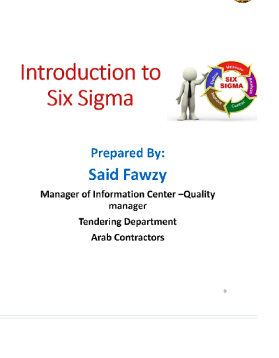
Introduction to Six Sigma
A solid operational excellence handbook covering Six Sigma fundamentals, defect level quantification, customer-driven quality definition, Kano Model theory, DMAIC process improvement methodology, and practical SIPOC diagrams for system mapping.
مرجع تطبيقي في مبادئ الجودة وإدارة العمليات وفق منهجية سيكس سيجما؛ يشرح قياس مستويات العيوب، وتحديد متطلبات العملاء، ونظرية نموذج كانو (Kano Model)، ودورة التحسين المستمر DMAIC، ورسم مخططات SIPOC للعمليات.